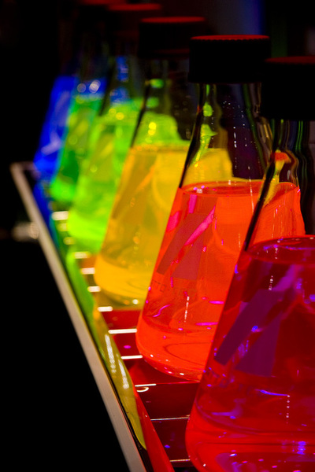

Background
In STEM fields, there is a lot of stigma around sexuality. As Manil Suri puts it, there is "an unspoken convention of STEM: the invisibility of its L.G.B.T. members." Suri identifies one of the problems with the culture of STEM fields in that it is very problem-focused. Over lunch, you hear people talk about their work. Even with my friends, I often find myself talking about our latest physics or astronomy problem set or my newest research project. This environment leaves little room to talk about other issues, like gender and sexuality.
Another problem with the STEM environment is that, as pointed out by Bilimoria & Stewart, there is a sort of indifference in the field since sexuality should not affect research. This indifference can make STEM workers feel more excluded since they are not acknowledged. However, Warkentin says that "there are many factors that influence my thinking, and queeriness is certainly part of it." This different thinking led to him thinking differently about frog eggs. Diversity can aid scientists in looking at things from a different perspective as other scientists, which aids in scientific advancement. However, this is generally not acknowledged by members of the scientific community.
The field itself has deeply entrenched roots in heteronormativity. The average scientist is a heterosexual male, and while women are coming into the field, women are pushed away from the field primarily in secondary education. Female leaders are even more uncommon since, as Mattheis puts it, "female leadership disrupts the stereotype of a scientist as a white heterosexual male".
However, hope is not all lost. There have been steps in the right direction, with organizations such as the National Organization of Gay and Lesbian Scientists and Technical Professionals Inc.(NOGLSTP), oSTEM, LGBT STEM, and House of STEM. Even still, these organizations have little visibility. There is a chapter of oSTEM on campus and I did not even know about this until I actively searched to see if it did in fact exist. Most of these organizations are limited in scope (for example, House of STEM is only in Ireland, NOGLSTP excludes transgendered persons) and do not have any visibility in the media.